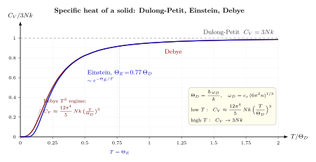

声子: 把固体振动变成玻色气体?
19 世纪的化学家 Dulong 和 Petit 在 1819 年从一堆金属粉末里量出了一个漂亮的规律: 不管是铅、铜、银、金还是铁, 每摩尔固体在室温下的定容比热都差不多是 $3R \approx 25$ J/(mol·K). 这件事在能均分定理的语言里一点也不奇怪 —— 一个三维晶格里每个原子锁在平衡位置附近, 既贡献三个平动自由度的动能 $\tfrac{3}{2}kT$, 又贡献三个弹性势能自由度的 $\tfrac{3}{2}kT$, 总共 $3kT$, 对每摩尔就是 $3N_A k = 3R$. 经典物理给出的 $C_V$ 是一个与温度完全无关的常数.
但低温实验把这个图景彻底击碎了. 当你把一块金刚石冷到液氮温度, 它的比热远远不是 $3R$, 而是只有几个百分点; 继续冷下去, $C_V \to 0$. 这件事在经典物理里无解 —— 能均分定理并没有一个温度参数可以调节. 真正的问题是: 为什么那些振动模式在低温下 "冻结" 了? 这一节我们就跟着 Einstein 和 Debye 走一遍, 把固体看成一种特殊的玻色气体, 把振动量子化为声子, 最终算出比热到底怎么随 $T$ 走.
一、Einstein 1907: 每个原子是一个独立量子振子
黑体问题教会了 Planck 一件事: 谐振子的能量不能连续, 必须是 $\hbar\omega$ 的整数倍. Einstein 1907 年把这个教训直接搬到固体上, 写下一个极简假设 —— 固体里的 $N$ 个原子是 $3N$ 个独立的量子谐振子, 全都以同一个频率 $\omega_E$ 振动. 每个振子的平均能量由 Planck 公式给出:
$$ \langle \varepsilon \rangle = \hbar\omega_E \left( \frac{1}{e^{\beta\hbar\omega_E} - 1} + \frac{1}{2} \right), \qquad \beta = \frac{1}{kT}. $$
零点能 $\tfrac{1}{2}\hbar\omega_E$ 对温度求导时消失, 所以不影响 $C_V$. 总内能 $U = 3N\langle\varepsilon\rangle$, 定义 Einstein 温度 $\Theta_E = \hbar\omega_E/k$, 对 $T$ 求导得到
$$ C_V^{\rm Einstein} = 3Nk \left(\frac{\Theta_E}{T}\right)^2 \frac{e^{\Theta_E/T}}{(e^{\Theta_E/T} - 1)^2}. \tag{1}$$
这个模型立刻解决了两件事: 高温极限 $T \gg \Theta_E$ 时, $e^{\Theta_E/T} \approx 1 + \Theta_E/T$, 一级展开后 $C_V \to 3Nk$, 回到 Dulong-Petit; 低温极限 $T \ll \Theta_E$ 时, 分母被 $e^{\Theta_E/T}$ 主导, $C_V \to 3Nk(\Theta_E/T)^2 e^{-\Theta_E/T} \to 0$. 定性上 Einstein 对了 —— 振动在低温下确实冻结, 因为 $kT$ 不足以激发一个 $\hbar\omega_E$ 的量子.
问题是定量上错了. 实验上测到的低温 $C_V$ 按 $T^3$ 走, 而 Einstein 的 $C_V$ 按 $e^{-\Theta_E/T}$ 衰减 —— 后者太快. 原因在于 "全部原子同一个频率" 这个假设太粗暴. 实际固体里, 长波长的振动模式频率非常低, 低到 $\hbar\omega \lt kT$ 的程度, 这些模式在任何温度下都没有被冻结. 这些低频模式贡献了主要的比热.
二、Debye 1912: 固体是装满声波的弹性介质
Debye 1912 年的关键一步, 是把固体不再当成一堆独立的原子, 而当成一块连续的弹性介质 —— 就像一块可以传播声波的果冻. 每个声波模式都是一个独立的简正坐标, 本身就是一个谐振子, 频率 $\omega = c_s |\vec k|$, $c_s$ 是声速. 把振动量子化, 每个模式也服从 Planck 公式, 这些振动量子就是**声子** (phonon).
固体体积 $V$ 里, $\vec k$ 空间中每个态占 $(2\pi)^3/V$, 加上纵波一支、横波两支共三支, 所以单位频率的模式数 —— **声子态密度** —— 是
$$ g(\omega) = \frac{3V\omega^2}{2\pi^2 c_s^3}. \tag{2}$$
(如果纵横波速度不一样, 可以定义一个有效声速 $3/c_s^3 = 1/c_L^3 + 2/c_T^3$, 下面都用这个 $c_s$.) 但这里有一个物理约束: 一个 $N$ 原子的固体只有 $3N$ 个独立的振动自由度, 不能比这更多. Debye 在 $\omega$ 空间加一个硬截断 $\omega_D$, 使得
$$ \int_0^{\omega_D} g(\omega)\, d\omega = 3N. $$
代入 $g(\omega)$ 积分就给出 Debye 频率
$$ \omega_D = c_s \left(6\pi^2 n\right)^{1/3}, \qquad n = N/V. $$
对应的 Debye 温度 $\Theta_D = \hbar\omega_D/k$. 这样整块固体就被描述为: 一个在频率空间 $[0, \omega_D]$ 内、态密度 $\propto \omega^2$ 的声子玻色气体. 内能是
$$ U = \int_0^{\omega_D} g(\omega)\, \hbar\omega \, \frac{1}{e^{\beta\hbar\omega} - 1}\, d\omega $$
(扣掉零点能, 因为它不影响 $C_V$). 换元 $x = \beta\hbar\omega$, 上限 $x_D = \Theta_D/T$, 对 $T$ 求导并整理得
$$ C_V^{\rm Debye} = 9Nk\left(\frac{T}{\Theta_D}\right)^3 \int_0^{\Theta_D/T} \frac{x^4 e^x}{(e^x - 1)^2}\, dx. $$
这就是 Debye 公式. 它在高温极限 $T \gg \Theta_D$ 下退回 Dulong-Petit, 在低温极限下给出 $T^3$ —— 下一节我们把低温极限严格推一遍.

三、(deepdive) 为什么恰好是 $T^3$ ? — Debye 律的精确推导
"Debye $T^3$ 律" 是固体物理教科书里反复出现的口头禅, 但少有地方把它严格推一遍 —— 很多人只记得结论. 这一节我们把它推到底, 包括那个看起来很神秘的系数 $12\pi^4/5$ 从何而来.
关键一步: 低温时 Debye 截断可以推到无穷. 在 $T \ll \Theta_D$ 的时候, 积分上限 $x_D = \Theta_D/T \to \infty$. 被积函数 $x^4 e^x/(e^x-1)^2$ 对大 $x$ 按 $x^4 e^{-x}$ 衰减, 所以把上限推到 $\infty$ 带来的误差是指数小的. 这就是为什么截断 $\omega_D$ 在低温下 "看不见"; 只有态密度中 $\omega$ 很小的那一头起作用, 大 $\omega$ 那一头被 Bose 因子压死.
换句话说, 低温下我们其实是在用一个自由的、无截断的声子气体 (就像一块体积无限、频率无上限的弹性介质) 来近似有限晶格. 高能模式反正都没激发, 去不去掉没区别.
把推导搭起来. 从 (2) 出发, 单位体积的激发能量是
$$ \frac{U}{V} = \int_0^\infty \frac{3\omega^2}{2\pi^2 c_s^3} \cdot \hbar\omega \cdot \frac{1}{e^{\beta\hbar\omega} - 1}\, d\omega. $$
换元 $x = \beta\hbar\omega$, $\omega = x/(\beta\hbar)$, $d\omega = dx/(\beta\hbar)$:
$$ \frac{U}{V} = \frac{3\hbar}{2\pi^2 c_s^3} \cdot \frac{1}{(\beta\hbar)^4} \int_0^\infty \frac{x^3}{e^x - 1}\, dx. $$
这个积分是一个经典结果, 可以用 $1/(e^x-1) = \sum_{m=1}^\infty e^{-mx}$ 展开, 每项积分出 $6/m^4$:
$$ \int_0^\infty \frac{x^3}{e^x - 1}\, dx = 6\sum_{m=1}^\infty \frac{1}{m^4} = 6\zeta(4) = \frac{\pi^4}{15}. $$
(用了 $\zeta(4) = \pi^4/90$.) 代回去:
$$ \frac{U}{V} = \frac{3\hbar}{2\pi^2 c_s^3} \cdot \frac{\pi^4}{15} \cdot \frac{(kT)^4}{\hbar^4} = \frac{\pi^2 k^4}{10\hbar^3 c_s^3}\, T^4. $$
注意这里 $U \propto T^4$, 这正是玻色子气体在无质量色散关系下的普适标志 —— 和光子气体的 Stefan-Boltzmann 一模一样, 只是把 $c$ 换成 $c_s$ 并多了一支纵波因子. 现在求 $C_V = \partial U/\partial T$:
$$ \frac{C_V}{V} = \frac{2\pi^2 k^4}{5\hbar^3 c_s^3}\, T^3. $$
这是一个绝对的结果 —— 只用了态密度 $g(\omega) \propto \omega^2$ 和 Bose 分布, 没有用到 $\omega_D$. 但为了把它重新包装成 "$\Theta_D$ 的函数", 用 $\omega_D^3 = 6\pi^2 n c_s^3$ 把 $c_s^3 = \omega_D^3/(6\pi^2 n) = \hbar^{-3}(k\Theta_D)^3/(6\pi^2 n)$ 替进去, 得到
$$ C_V = \frac{2\pi^2}{5} \cdot 6\pi^2 N \cdot k \cdot \left(\frac{T}{\Theta_D}\right)^3 = \frac{12\pi^4}{5} Nk\, \left(\frac{T}{\Theta_D}\right)^3. $$
这就是经典的 Debye $T^3$ 律, 系数 $12\pi^4/5 \approx 233.8$.
为什么是 $T^3$, 不是别的幂? 可以顺着推导看清楚. 整个低温 $C_V$ 的幂次由两件事决定: 态密度在原点附近的幂次 $g(\omega) \propto \omega^{d-1}$ (三维声波 $d=3$, 所以 $\omega^2$), 与色散关系 $\omega \propto k$ 的线性. 一般地, 如果 $\omega \propto k^\alpha$ 在 $k \to 0$ 时成立, $d$ 维态密度是 $g(\omega) \propto \omega^{d/\alpha - 1}$, 能量密度 $\int g(\omega) \hbar\omega n_B(\omega) d\omega \propto T^{d/\alpha + 1}$, $C_V \propto T^{d/\alpha}$. 对三维线性声波 ($\alpha=1, d=3$), 得到 $T^3$; 对三维二次色散的磁振子 ($\alpha=2$), 就是 $T^{3/2}$; 对二维线性色散的薄膜, 就是 $T^2$. 所以 $T^3$ 律的三次方之所以是三次方, 是 "三维" + "线性无质量色散" 两件事合起来的签名, 与光子气体 $U \propto T^4$ 的幂同源.
把问题倒过来看更漂亮: 低温实验测出一块新材料比热 $C_V = AT^n$, 拟合出 $n$, 就能读出这块固体在低温下最低能激发的集体自由度的色散结构. 铁磁体低温 $C_V \propto T^{3/2}$ 告诉你低能模式是磁振子而非声子. Debye 律不是孤立的一个数学奇迹, 它是一整类 "低能幂次谱" 原理的一个实例.
四、数字代入与两个极限
来做两个具体估算, 看 Debye 温度在真实固体里差到什么程度.
钻石. $\Theta_D \approx 2230$ K. 碳原子轻 ($A = 12$), 键强 (共价键 sp³), 所以声速高 ($c_s \approx 1.2 \times 10^4$ m/s, 数量级比金属大得多). 代入 $\omega_D = c_s (6\pi^2 n)^{1/3}$, 碳原子数密度 $n \approx 1.76 \times 10^{29}$ m⁻³, 可以反算出 $c_s \approx 1.3 \times 10^4$ m/s, 与实验吻合. 室温 $T = 300$ K $\ll \Theta_D$, 所以钻石在室温下就已经处于 "低温 Debye $T^3$ 区", $C_V \approx (12\pi^4/5) \cdot 3R \cdot (300/2230)^3 \approx 233.8/3R \cdot \ldots$ —— 直接代: $C_V \approx 233.8 \cdot (300/2230)^3 \cdot R \approx 233.8 \cdot 2.43 \times 10^{-3} \cdot 8.31 \approx 4.7$ J/(mol·K), 远小于 Dulong-Petit 的 25 J/(mol·K). 这就是为什么钻石摸起来 "冷" —— 它的热容小得多, 从你手指吸一点点热就够把局部温度拉高.
铅. $\Theta_D \approx 105$ K. 铅原子重 ($A = 207$), 金属键软, 声速低 ($c_s \approx 1.3 \times 10^3$ m/s). 室温 $T = 300$ K $\gg \Theta_D$, 铅已经在高温 Dulong-Petit 区, $C_V \approx 3R \approx 25$ J/(mol·K), 实验值 26.4 J/(mol·K), 只稍稍超出 —— 多出来的那点来自电子比热与热膨胀修正. 钻石与铅都在室温, 但一个在低温区、一个在高温区, 靠的就是一根 $\Theta_D$ 的标尺.
高温极限检验. $T \gg \Theta_D$ 时 $x = \beta\hbar\omega \ll 1$, 被积函数 $x^4 e^x/(e^x-1)^2 \to x^2$, 积分 $\int_0^{x_D} x^2 dx = x_D^3/3 = (\Theta_D/T)^3/3$, 代回 Debye 公式: $C_V \to 9Nk(T/\Theta_D)^3 \cdot (\Theta_D/T)^3/3 = 3Nk$, 严格回到 Dulong-Petit. 两个极限都对.
历史注脚. Einstein 1907 的论文是第一次把量子假设用在黑体以外的场合, 他想回答的是同一个问题 —— 为什么比热在低温下不再是经典的常数. 他一下就说中了方向, 却错在 "全部原子同频率" 的简化. 五年后 Debye 加上连续弹性体与 $\omega_D$ 截断, 把定量曲线拉对. 两人的工作串起来就是一部微型的量子统计诞生史: 先把量子化从光子搬到物质振子, 再把物质振子重新集体化、拉回 "玻色气体" 的视角. 声子从此正式成了一个粒子 —— 虽然它只是晶格的集体激发, 但在统计力学里, 它和光子几乎完全平权.
小结
Debye 模型的意义远超 "解释固体低温比热" 本身. 它立下了一个普遍范式: 任何一个带连续对称性的系统, 在基态附近都有一批低能集体激发 (Goldstone 模式), 这些激发本质上就是某种 "波", 可以量子化为无质量玻色子. 把它们的态密度 $g(\omega) \propto \omega^{d-1}$ 与 Bose 分布卷起来, 低温自由能就按 $T^{d+1}$ 走, 比热按 $T^d$ 走. 声子是这一范式的第一个也是最干净的例子, 磁振子、自旋波、光子都可以套用它. 下一节我们从统计力学的更深一层走出来, 看当系统偏离平衡时, Boltzmann 方程如何接管 —— 那里的 "声子气体" 也将成为凝聚态输运理论的主角.
▲